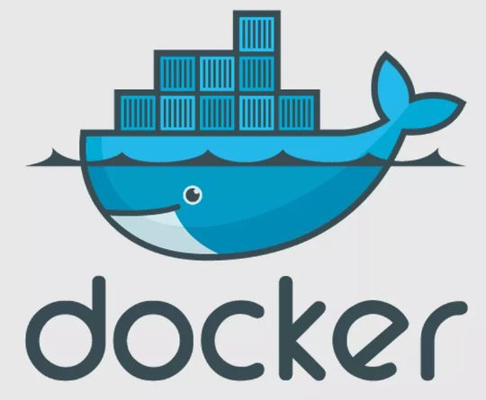

Git, Docker, Automated Testing, and Continuous Integration
Git is a powerful coding version control system (VCS) which provides a platform for managing code changes and makes collaboration from multiple developers much easier. It allows incremental changes to be saved as commits. These commits can be reverted and moved around easily. The other major feature of git is branches. Branches enable a particular section of development such as a bug fix or new feature be developed entirely separate from the main master branch. The branches can later be merged into the master branch when appropriate such as when they are stable and bug free. Branching enables developers to have their own development space and collaborate with others on combining their branches with the main master.

Git may not sound like much, but consider the alternative. Without Git, a company would need to have its developers transfer their repositories back and forth all the time manually. Merging code would become a very tedious task that would waste time and resources. With GIT, merging is seamless and saves hours of time ultimately making a company more competitive and productive since version control is sped up and simplified. Developers get more time to develop and ultimately more time for value added tasks.

Another great development tool is Docker. Docker lets you easily adapt your code to different systems without having to set up whole virtual machines. In a sense, docker is a lightweight virtual machine. By using containers and the docker engine, less memory is used, it has a shorter boot time and its more efficient versus using virtual machines. This enables a company to use less computing hardware resources for testing software and still get the same performance, an obvious increase in productivity. Another advantage of docker is that it is easier and quicker to use versus setting up multiple virtual machines. Software testers have less set up time and maintenance tasks so they can spend more time testing software and less time maintaining their testing environments.
Docker also has automated testing which can potentially eliminate dedicated software tester employees saving a company time and money while maintaining the same software quality level. You can integrate docker with GitHub and have it automatically test when a pull request is performed in GitHub. By doing this, you essentially are killing 2 birds with one stone. Pull requests are already a development step, but now it can also act as a software test. This is much easier and faster than the alternative of manually configuring a repository reflecting the latest pull request then manually activating the docker container test. It also makes the developer more likely to notice and address compatibility bugs and less likely to backtrack over non-compatible code.
Continuous integration (CI) can also help a company be more productive and competitive. CI in software development means to integrate branches often (continuously). The advantage of this is that it reduces a major set-back in software development, integration bugs. The longer a developer works on their own branch, the more likely it is to be incompatible with other developer’s branches when they go to merge. In other words, the integration bugs are more likely to disrupt the workflow and inhibit productivity. By continuously merging, integration bugs are caught early on and are much easier to diagnose and correct.